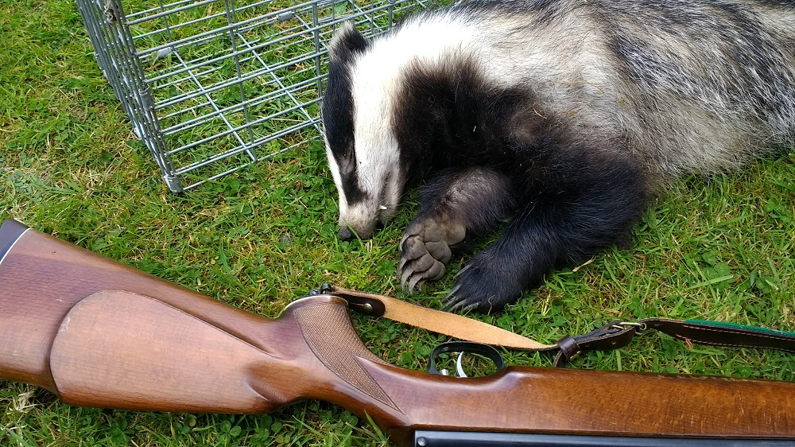

Badgers are being killed by the UK government in what is known as the ‘badger cull’, which has taken place in certain parts of England since 2013. Thousands of badgers have so far been killed in what we, along with numerous independent scientists and animal welfare organisations, believe is a totally unjustified slaughter of a protected species. In 2018 the Government once again rolled out the badger cull bringing the total to 31 zones. Reports suggest that 32,000 badgers were killed in autumn 2018 alone.
The Government believes that culling badgers will help reduce the spread of bovine tuberculosis (bTB) in cattle, also sometimes incorrectly referred to as ‘badger TB’ - an infectious disease that results in the slaughter of tens of thousands of cattle each year.
Badgers have been found to be infected with bTB and some farmers fear that infected badgers are transmitting the disease to their cattle, despite the fact that there is no conclusive evidence that this happens often enough to be significant.

BADGER CULL – THE WAY FORWARD
The National Farmers Union lobbied hard for a badger cull and the Government agreed to pursue this policy - in spite of substantial scientific evidence suggesting that culling badgers would not have any significant impact on reducing the disease in cattle, and could even make it worse.
We agree that action is needed to tackle bovine TB as it is devastating for cattle and for farmers; however the evidence shows the main source of transmission for bovine TB is cattle to cattle transmission. Killing badgers will not solve the problem of bovine TB in the cattle herd. We believe that this can be achieved through improved testing (i.e. better tests and mandatory annual and pre-movement testing for all cattle), more movement restrictions and rigorous biosecurity on farms.
While badgers are not the main source of TB, badger vaccination is an alternative to culling. Vaccination programmes are happening in some areas of the country and we support the Badger Trust’s call for the Government to implement a National Badger Vaccination programme.
The League has a long history of campaigning to protect badgers and played an instrumental role in the implementation of the Protection of Badgers Act 1992. Our charitable status remit covers all areas of animal welfare and we believe that our expertise in badgers is an asset in the campaign to stop the badger cull.
WHY THE LEAGUE IS OPPOSED TO THE BADGER CULL
We believe that culling badgers in an attempt to tackle bTB in cattle is cruel, ineffective and inhumane. A 2014 report by an Independent Expert Panel of scientists appointed by Defra to assess the effectiveness and humaneness of the 2013 pilot badger culls, concluded:
- The culls did not even come close to reducing badger populations by 70%, the minimum level deemed to have any significant effect in reducing bTB in cattle
- Coverage of 70% of the land in the cull area, another essential criteria for having any significant effect, could not be confirmed
- Up to 18% of badgers shot were still alive after 5 minutes and at risk of experiencing marked pain, meaning up to 422 badgers may have suffered marked pain.
WHY CAN'T WE VACCINATE CATTLE AND BADGERS?
Vaccinating cattle against bTB is currently banned under EU law because the way to distinguish vaccinated cattle from infected cattle is still being tested.
The Environment, Food and Rural Affairs Committee held an inquiry in 2013 to explore the extent to which vaccination can contribute to the control and eradication of bovine TB. It stated that the Government should produce a clear strategy for badger vaccination.
It also confirmed that the primary means of transmission is cattle to cattle, and as such a cattle vaccination could be a useful proactive tool for combating the disease in the future; however, a licensed cattle vaccine is still several years away.
WHAT IS THE LEAGUE DOING TO OPPOSE THE CULL?
As a founding member of the Team Badger coalition, the League Against Cruel Sports is campaigning to stop the badger culls and any potential further roll outs. Read this personal account from long-time badger cull campaigner and League Regional Campaigns Manager Emily Lawrence, Badgers need us now more than ever.
HOW CAN I HELP TO STOP THE CULL?
- Contact your MP and remind them that the published science and evidence from Wales is strongly against the cull. Ask them to vocally oppose the cull and urge their party to commit to ending the cull if they form the next Government
- When the cull starts, join a peaceful wounded badger patrol by getting in touch with the local patrols that you can find in the Team Badger Webpage
- Share this page on your social media